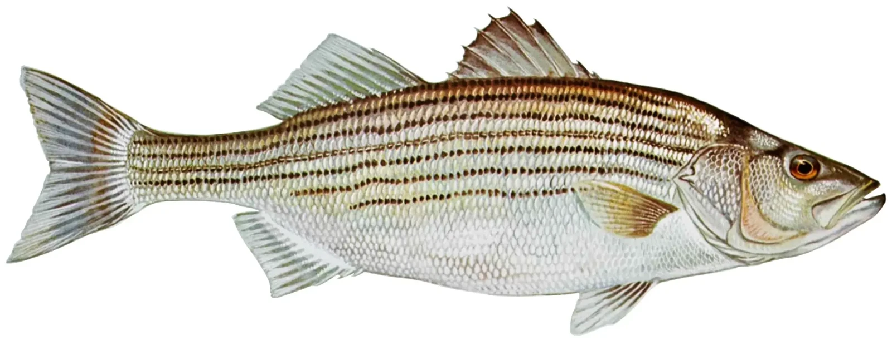
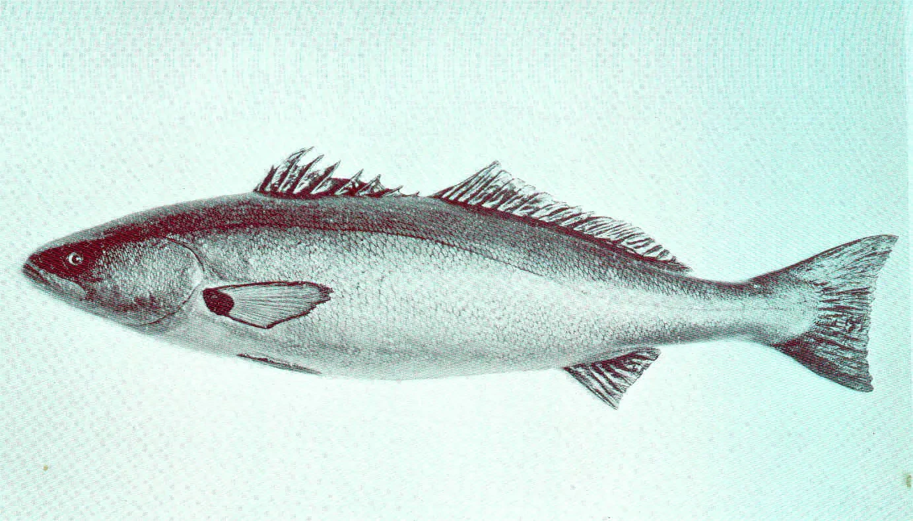
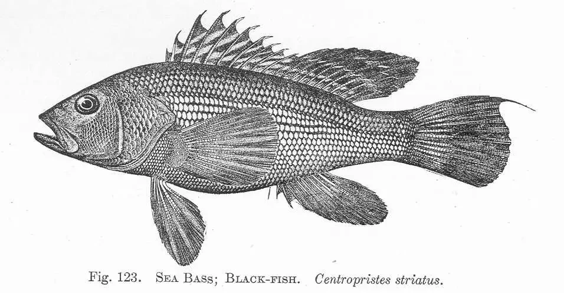

<!DOCTYPE html>
<html>
    <link rel="stylesheet" href="../CSS/fish.css">
</html>
<head>
    <body>
<a href="Fishing.html">Home page</a>
<a href="fishing 3.html" target="_blank"> Page 3 sunfish family/ Black Basses</a>
 <a href="Fishing 4.html" target="_blank"> Page 4 ambloplites family</a>


<h1>Sea Bass</h1>


<p>The sea bass have white sea bass, striped sea, black sea bass.</p>
<div class="p2"><p>Striped bass can live for 30+ years anadromous fish known for their seven to eight dark colors. They can grow 5 feet and 100 pounds. The striped bass inhabit the Atlanic coast. the striped bass spawn in fresh water.</p></div>
            
            <div class="p2"><p>White bass are in fast growing schools that can live in saltwater and freshwater. They are known for their silvery sides. The white bass are often called sand bass and the females lay up to 1 million eggs. The white bass eat minnows and shads.</p></div>
              
              <div class="p2"><p> Black bass are a popular freshwater gamefish that also live in saltwater. They are part of the sunfish family that is on page 3. They are native to North America but introduced worldwide. The black bass eat fish, and crayfish. the common black bass include smallmouth, spotted, and Guadalupe bass that live in fresh water.</p></div>
               

        
    </body>
</head>

